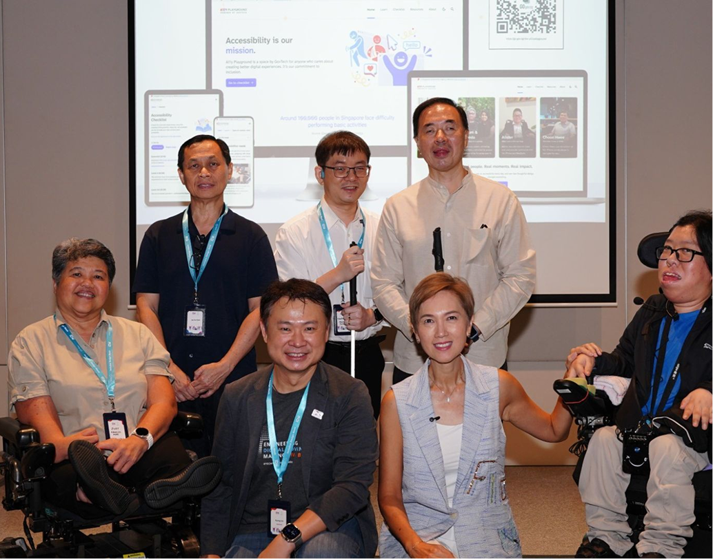
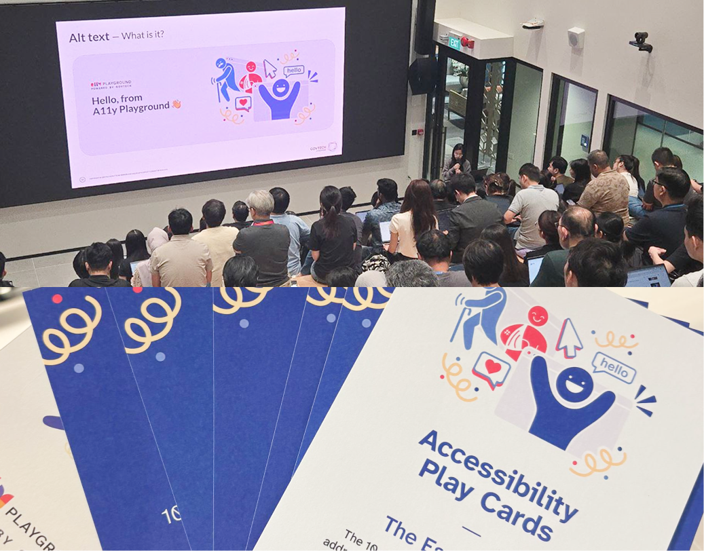
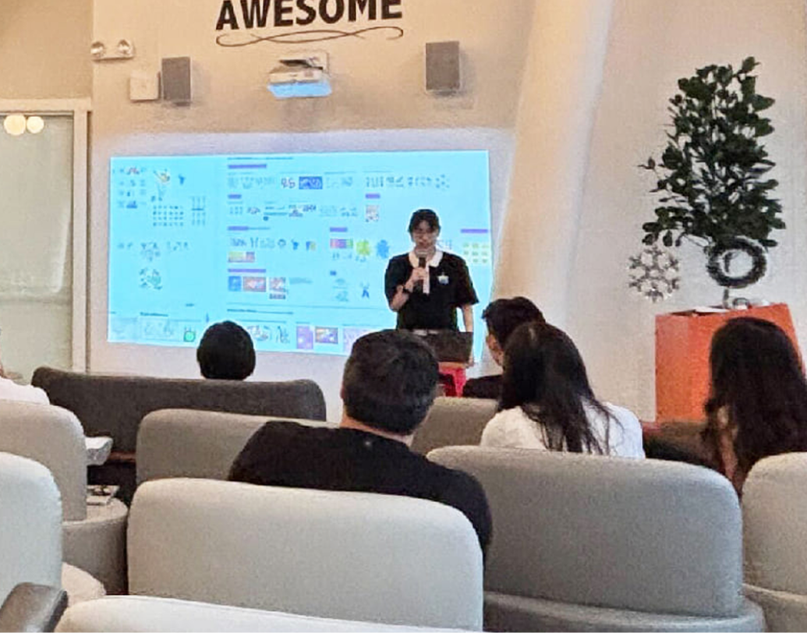

GovTech a11y Playground
“ How can we empower digital professionals to build more accessible and inclusive digital services? ”
During summer 2025, I joined GovTech Singapore as a UI/UX Designer intern. Below are some contributions I made to the a11y Playground team, which I joined halfway through their design process. My role primarily involved setting the site's art direction with illustrations, as well as participating in user interviews and synthesising data for site refinement.
My contributions
- • Conceptualised and provided reusable illustrations/animations from scratch.
- • Presented my design process with 30+ UI/UX Designers during a monthly company huddle.
- • Conducted user interviews and synthesised observations and insights.
- • Created and updated high-fidelity Figma frames for website layouts.
WCAG made simple: An accessibility toolkit for practitioners
As a government agency, GovTech has an even greater responsibility to ensure digital services meet the
needs of People with Disabilities (PWDs). Unveiled during Inclusive Design Week 2025, a11y Playground serves as an interactive toolkit enabling developers,
designers, and product managers to integrate WCAG standards into everyday
products.
👉 View site: a11y.tech.gov.sg
📰 News Coverage: Straits Times, Lianhe Zaobao


Setting art direction with illustrations
I established the art direction and visual identity for a11y Playground. Over 10+ custom vector illustration and animation assets (including lottiefile) were produced from scratch to champion inclusive digital experiences and drive nationwide adoption among public sector workers, such as developers, and designers.


Ensuring inclusive & accessible designs for all users
Negative space was used to create distinct contrast between subjects to ensure the artwork is perfectly visible across both light and dark modes.
Colour palettes were validated via colour blindness simulators to guarantee that the design remains clear and distinguishable for visually-impaired users.
Alt-text was integrated to bridge the gap for screen-reader users, ensuring that visual context is accessible to everyone.


Meaningful visuals, with an additional layer of storytelling


Driving publicity and streamlining workflows

Solidified a high-profile national debut
The distinct visual identity has maximised brand recall in audiences during its official reveal by Minister Josephine Teo, and widespread media coverage across major media outlets (e.g The Straits Times).

Streamlined Design Workflows
Reusable SVG vectors streamlined internal workflows, allowing colleagues to easily repurpose design elements for slide decks and physical collateral.

Sharing with 30+ UX designers
Presented my illustration process to 30+ UX designers during a monthly design studio, sharing conceptualisation techniques on how to create visual assets while honing public speaking skills.
Building digital screens for accessibility checklist articles
I assisted with creating Figma frames for the "Principle of Accessibility: Top 10 Issues" pages. I designed these with a "large screen" first, given that the website is primarily viewed on laptops. The nature of this project focuses more on presenting informational content rather than complex user flows, so I prioritised a clear hierarchy with the different header sizes, as well as ensuring the content is easily digestible. (Had more experience doing up Figma screen flows & technical documentation in another project, but it's confidential)

Enhancing comprehension with visual aids
Picture infographics were created to visually explain the content of the examples in the articles, to make them more engaging and easier to understand for users. I added alt text to explain these images for screen-reader users, ensuring that the information is accessible to everyone.


Conducting usability testing and synthesis
User testing with demographics to uncover findings
Through user testing with government professionals, I documented behaviors, identified pain points, and gained firsthand insights into their workflow needs. This allowed me to directly understand the user's concerns with the website firsthand, and gather their concerns and perception on our website's overall ease of interaction and content's clarity, as well as how they might incorporate a11y into their workflows.

Using Dovetail AI to transcribe, synthesise and cluster insights
Using Dovetail, I transcribed and clustered interview insights into key categories (content, features, positive feedback, confusion areas). To make the data actionable, I consolidated findings in Google Sheets with timestamps, severity levels (minor, moderate, major), and action types (copy vs. design).
💡 Examples of key findings & recommendations:
Terminology comprehension varies by role:
Inconsistent information interpretation occurred (e.g., "site component" was interpreted differently by a SWE vs. a product manager).
(Recommendation: Revise the terminology copy and add definitions for key terms for clearer specification.)
Workflow integration over empathy:
Professionals prioritise technical workflow integration over empathy-building when accessing information as they focus on output speed.
(Recommendation: Reorder the flow of sections on the homepage to elevate "Top 5 at-a-glance issues" above "People's Stories".)